FFII Exploration Expansion03
36 field frames at 64×64 /32 PPU, 16 props at128×128 /64 PPU and16 cavern tiles at64×64 /64 PPU. Twelve walk clips. Candidate art; inspect motion, joins and proportions.
SHA-256 provenance, crop rectangles, native metadata and placements
Preserved 1258 previous PNGs and 1258 metadata files byte for byte.
Construction guide and candidate limitations
All 68 native exports
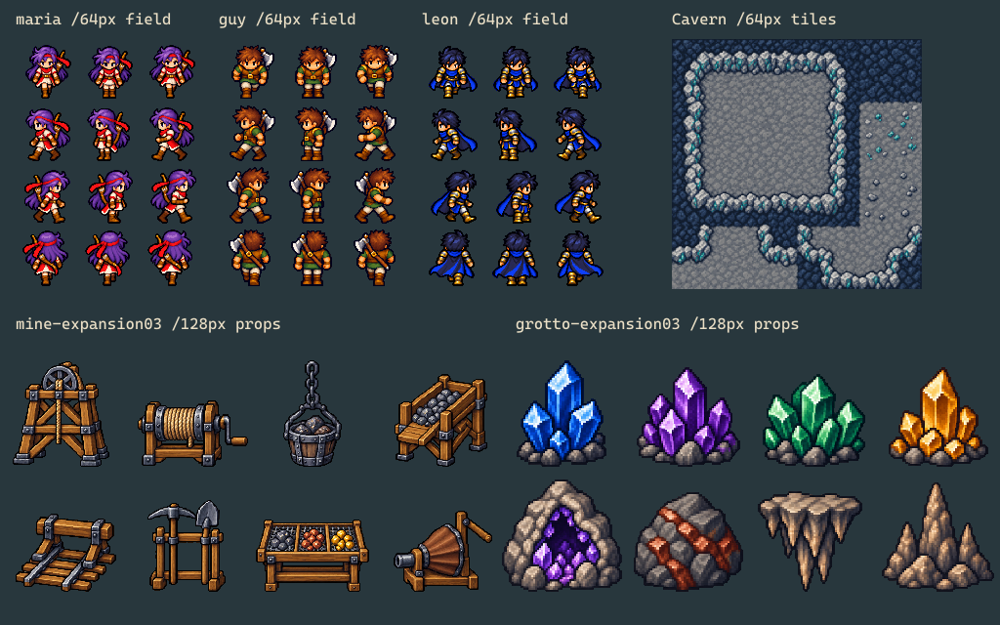
Actual exports and map assemblies
exploration-expansion03-maria
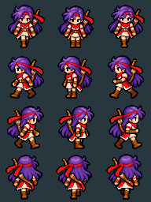
Exact native PNGs in source row-major order; no painting or seam correction
exploration-expansion03-guy
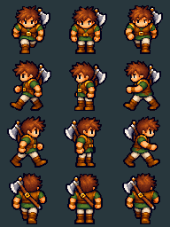
Exact native PNGs in source row-major order; no painting or seam correction
exploration-expansion03-leon
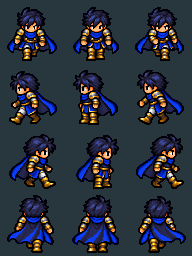
Exact native PNGs in source row-major order; no painting or seam correction
exploration-expansion03-mine-expansion03
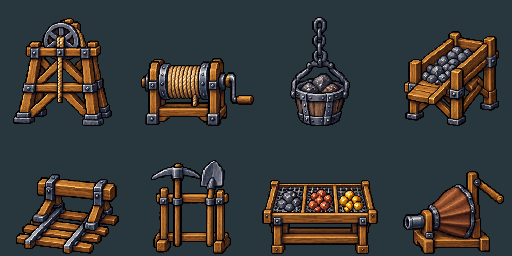
Exact native PNGs in source row-major order; no painting or seam correction
exploration-expansion03-grotto-expansion03
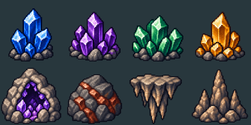
Exact native PNGs in source row-major order; no painting or seam correction
exploration-expansion03-crystal-cavern-expansion03
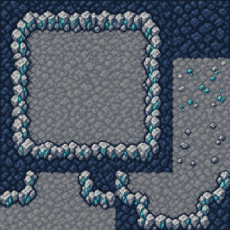
Exact native PNGs in source row-major order; no painting or seam correction
Field scale comparison
Exact 64px down-idle PNGs, Firion first, then new actors; common32 PPU. Ground baseline62 for Firion,61 for new padding3 sources.
mine-worksite
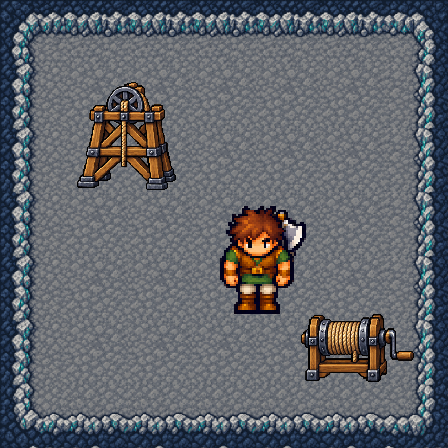
Actual exported tiles and props at 64 PPU; no edge correction
crystal-grotto
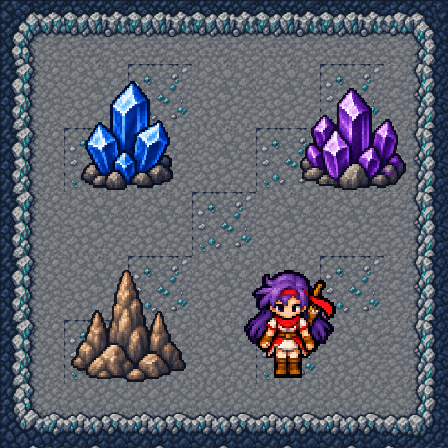
Actual exported tiles and props at 64 PPU; no edge correction
cavern-inner-corners
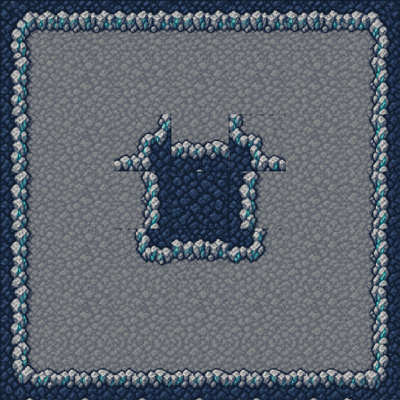
Actual exported tiles and props at 64 PPU; no edge correction
Walk clips
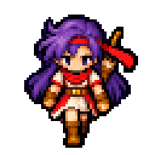
maria / walk-down ·120/80/120/80ms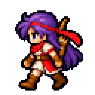
maria / walk-left ·120/80/120/80ms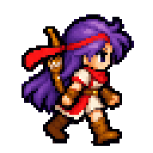
maria / walk-right ·120/80/120/80ms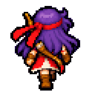
maria / walk-up ·120/80/120/80ms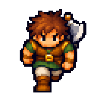
guy / walk-down ·120/80/120/80ms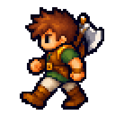
guy / walk-left ·120/80/120/80ms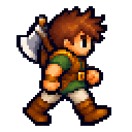
guy / walk-right ·120/80/120/80ms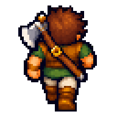
guy / walk-up ·120/80/120/80ms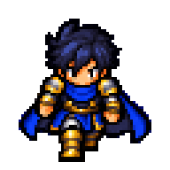
leon / walk-down ·120/80/120/80ms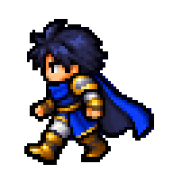
leon / walk-left ·120/80/120/80ms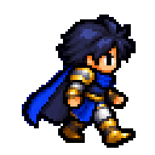
leon / walk-right ·120/80/120/80ms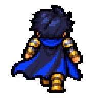
leon / walk-up ·120/80/120/80msNative individual assets
maria/down-01
64×64 ·32 PPU ·2 world unitsmaria/down-02
64×64 ·32 PPU ·2 world unitsmaria/down-03
64×64 ·32 PPU ·2 world unitsmaria/left-01
64×64 ·32 PPU ·2 world unitsmaria/left-02
64×64 ·32 PPU ·2 world unitsmaria/left-03
64×64 ·32 PPU ·2 world unitsmaria/right-01
64×64 ·32 PPU ·2 world unitsmaria/right-02
64×64 ·32 PPU ·2 world unitsmaria/right-03
64×64 ·32 PPU ·2 world unitsmaria/up-01
64×64 ·32 PPU ·2 world unitsmaria/up-02
64×64 ·32 PPU ·2 world unitsmaria/up-03
64×64 ·32 PPU ·2 world unitsguy/down-01
64×64 ·32 PPU ·2 world unitsguy/down-02
64×64 ·32 PPU ·2 world unitsguy/down-03
64×64 ·32 PPU ·2 world unitsguy/left-01
64×64 ·32 PPU ·2 world units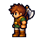
guy/left-02
64×64 ·32 PPU ·2 world unitsguy/left-03
64×64 ·32 PPU ·2 world unitsguy/right-01
64×64 ·32 PPU ·2 world unitsguy/right-02
64×64 ·32 PPU ·2 world unitsguy/right-03
64×64 ·32 PPU ·2 world unitsguy/up-01
64×64 ·32 PPU ·2 world unitsguy/up-02
64×64 ·32 PPU ·2 world unitsguy/up-03
64×64 ·32 PPU ·2 world unitsleon/down-01
64×64 ·32 PPU ·2 world unitsleon/down-02
64×64 ·32 PPU ·2 world unitsleon/down-03
64×64 ·32 PPU ·2 world unitsleon/left-01
64×64 ·32 PPU ·2 world unitsleon/left-02
64×64 ·32 PPU ·2 world unitsleon/left-03
64×64 ·32 PPU ·2 world unitsleon/right-01
64×64 ·32 PPU ·2 world unitsleon/right-02
64×64 ·32 PPU ·2 world unitsleon/right-03
64×64 ·32 PPU ·2 world unitsleon/up-01
64×64 ·32 PPU ·2 world unitsleon/up-02
64×64 ·32 PPU ·2 world unitsleon/up-03
64×64 ·32 PPU ·2 world units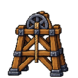
mine-expansion03/shaft-headframe
128×128 ·64 PPU ·2 world units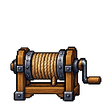
mine-expansion03/ore-winch
128×128 ·64 PPU ·2 world units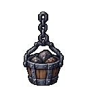
mine-expansion03/ore-bucket
128×128 ·64 PPU ·2 world units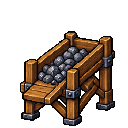
mine-expansion03/ore-chute
128×128 ·64 PPU ·2 world units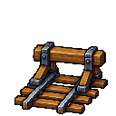
mine-expansion03/rail-stop
128×128 ·64 PPU ·2 world units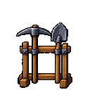
mine-expansion03/tool-rack
128×128 ·64 PPU ·2 world units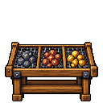
mine-expansion03/ore-sorting-table
128×128 ·64 PPU ·2 world units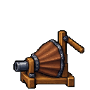
mine-expansion03/ventilation-bellows
128×128 ·64 PPU ·2 world units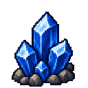
grotto-expansion03/sapphire-cluster
128×128 ·64 PPU ·2 world units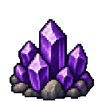
grotto-expansion03/amethyst-cluster
128×128 ·64 PPU ·2 world units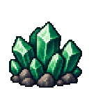
grotto-expansion03/emerald-cluster
128×128 ·64 PPU ·2 world units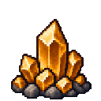
grotto-expansion03/amber-quartz
128×128 ·64 PPU ·2 world units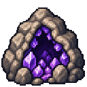
grotto-expansion03/open-geode
128×128 ·64 PPU ·2 world units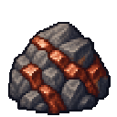
grotto-expansion03/iron-ore-boulder
128×128 ·64 PPU ·2 world units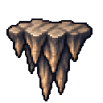
grotto-expansion03/stalactite-cluster
128×128 ·64 PPU ·2 world units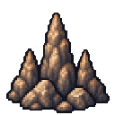
grotto-expansion03/stalagmite-cluster
128×128 ·64 PPU ·2 world units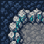
crystal-cavern-expansion03/wall-nw
64×64 ·64 PPU ·1 world units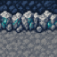
crystal-cavern-expansion03/wall-n
64×64 ·64 PPU ·1 world units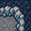
crystal-cavern-expansion03/wall-ne
64×64 ·64 PPU ·1 world unitscrystal-cavern-expansion03/bedrock-fill
64×64 ·64 PPU ·1 world units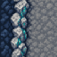
crystal-cavern-expansion03/wall-w
64×64 ·64 PPU ·1 world units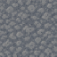
crystal-cavern-expansion03/floor-center
64×64 ·64 PPU ·1 world units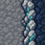
crystal-cavern-expansion03/wall-e
64×64 ·64 PPU ·1 world units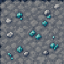
crystal-cavern-expansion03/floor-mineral
64×64 ·64 PPU ·1 world units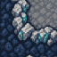
crystal-cavern-expansion03/wall-sw
64×64 ·64 PPU ·1 world units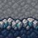
crystal-cavern-expansion03/wall-s
64×64 ·64 PPU ·1 world units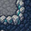
crystal-cavern-expansion03/wall-se
64×64 ·64 PPU ·1 world units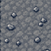
crystal-cavern-expansion03/floor-rubble
64×64 ·64 PPU ·1 world unitscrystal-cavern-expansion03/inner-nw
64×64 ·64 PPU ·1 world unitscrystal-cavern-expansion03/inner-ne
64×64 ·64 PPU ·1 world unitscrystal-cavern-expansion03/inner-sw
64×64 ·64 PPU ·1 world unitscrystal-cavern-expansion03/inner-se
64×64 ·64 PPU ·1 world units Limits
- Candidate artwork; original-reference fidelity and seamless joins require visual approval
- Sprite scale is shared across each sheet; alpha anchors and exact crop rectangles recorded in manifest
- No Unity import, collision, RuleTile or runtime validation is claimed
- Walk candidates need pose polish: Maria front/back and Leon side; side arm changes do not guarantee strong foot-occlusion changes